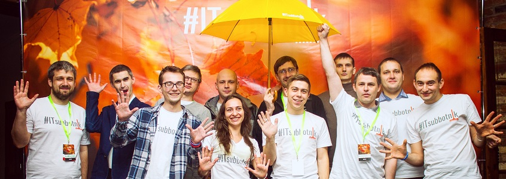
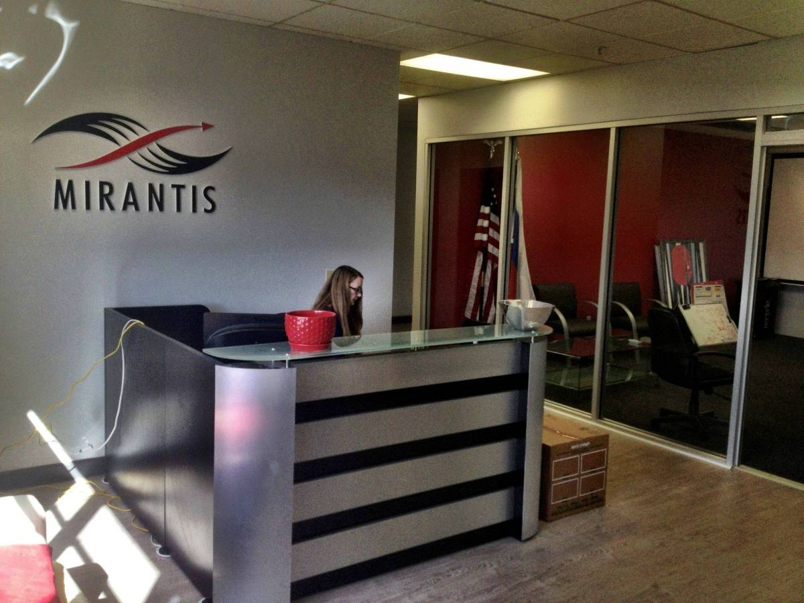

Вступление часть 1 начало карьеры
Как я стал тестировщиком ПО
Не случайные случайности происходит в жизни довольно часто и порой совершенно не предскажуемый итог оказывается, у бытовой ситуации. В 2005 году, я после двух академических отпусков, с неохотой посещал зянятия на физическом факультете Саратовского Государственного Университета им. Н.Г. Чернышевского. Одноклассники, к тому моменту, уже получили высшее образование, и немного поработав собирались покорять Москву. Это и послужило поводом увидится, после перерыва с другом детства, с которым долго сидели за одной партой в школе. По итогу встречи у меня остался номер телефона директора компании VDI, о которой я не знал абсолютно ничего, кроме того, что ребята пишут программы. Как раз в начале сентября проходил конкурс на трехмесячные курсы ИТ. Я был совсем в не контекста программирования и создания софта и мои результаты тестов оказались посредственными. Через пару дней мне все таки позвонили, так как один студент отказался, и освободилось одно место в группе. Так, совершенно, случайно я оказался на курсах тестировщиков пограммного обеспечения - “Basic tools training. VDI Training Center, QA engineer”. В те далекие времена отрасль была совсем молодая с непонятными перспективами и возможностями, но удовольствие от решения новых сложных задач, перевесило первые негативные впечатления о профессии. Через месяц VDI был поглощен аутсорсинговым гигантом Восточной Европы - EPAM Systems и с января 2007 я попал на свой первый проект, да еще и к американскому заказчику WebMD, в роли автотестировщика. До сих пор сохранились самые теплые и позитивняые воспоминания о том времени. Молодой коллектив, иностранные коллеги, грамотные старшие товарищи с прекрасным чувством юмора и огромный офис, все доставляло удовольствие. Кстати, софт тогда был весь пиратский и я тихонечко автоматизировал web интерфейс, запуская HP QuickTest Professional на виртуальной машине, которая была на внешнем винчествере, на случай неожиданного визита в офис сотрудников ОБЭБ. Да, они действительно, все таки пришли, но инженеры были к этому готовы и только раскидали CD-R по столам с надписью Windows crack.
В Саратове множество различных учебных заведений, но все таки самые выдающиеся это - классический СГУ и Политехнический университет. Физики с обеих сторон всегда находились в конфронтации и считали, что их Альма Матер превосходит все остальные, но у оппонета было противоположное мнение на этот счет. в 2007 и 2008 годах студенты СГУ неожиданно забрали золотые медали на международных олимпиадах по программированию, что привлекло внимание очень крупного бизнеса в сфере ИТ. Ребята отказались от всех предложений имигрировать и остались в родном городе. Если гора не идет к Магомеду, значит он сам идет к ней. Нашелся бизнесмен, который смог продать талантливую молодежь за границу и организовал ИТ офис в Саратове. Так появился центр непрерывной олимпийской подготовки на базе факультета компьютернызх наук СГУ и центр компетенции и аутсорсинга компании Mirantis. Отделение EPAM в городе появилось благодаря усилиям доцента из политеха и работали там в основном студенты этого ВУЗа. Через год я перешел в Mirantis на проект GE Money Bank RU, и с радостью воспринял то факт, что в ИТ, можно получать при одинаковых нагрузках в два раза больше денег, а проектная деятельность и орагнизация быта в офисе имеет потенциал и может быть в разы лучше. Офис Mirantisa до сих пор на порядок светлее, удобнее, эргонимичние, чем любой другой, в котором мне приходилось трудиться. Наша группа QA полносью покрывала потребность GE в тестировании, а в соседней комнате был единственный офис разработки Cisco в Европе. Безусловно это были лучшие времена в ИТ индустрии в городе. Постепенно, посредственные задачи бизнеса, заметно приземлили уровень среднего айтишника, тем более основная масса вундеркиндов разъехались осознав, что в США или Новой Зелендии уровень жизни в разы превышает нашу действительность.
 
{kind=link}
{kind=link}
К концу 2012 года, сечмейные обстоятельства сложились таким образом, что я принял взвешенное решение переехать в Москву. Как сложилась у меня жизнь в городе Москва, расскажу в следующем посте.
До скорых встреч в эфире! С уважением, DSH.
P.S. SSL так, изначально подписывался Сергей Сергеевич, профессор из Политеха, организовавший офис EPAM в Саратове, а потом уже Герман Германович ставил подпись GGN, это доцент из СГУ, благодаря усилиям которого Mirantis появился в городе. А теперь уже и я пишу под псевдонином DSH, хотя, разумеется далеко не доцент.